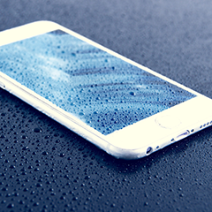
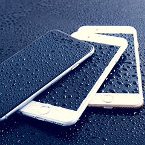
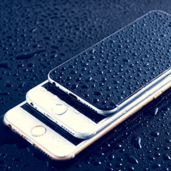
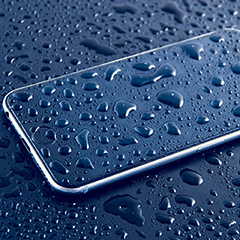
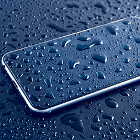
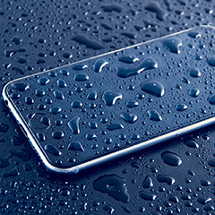

Apple iPhone 6S de 32GB con red 4G, pantalla retina HD de 4,7" y cámara 12 mp, Plata
Descripción
Con el iPhone 6S lo único que cambia es todo. Descubre el 3D Touch para tener aún más opciones de interacción con el Smartphone, da vida a tus recuerdos con Live Photos, haz vídeos en 4K, disfruta de la velocidad del 4G y habla con Siri todos los días. Respira innovación a todos los niveles.
3D Touch
La tecnología 3D Touch detecta la intensidad con que presionas la pantalla para que puedas hacer lo impensable. Dependiendo de la intensidad con la que presiones la pantalla tendrás todo un amplio abanico de interacciones. Interactúa más rápido que en modelos anteriores e incluso responde a leves toques. Descubre más sobre el 3D Touch pinchando aquí.
Cámara avanzada
La iSight de 12 Mpx logra unas imágenes más nítidas y graba vídeos en 4K (una resolución hasta cuatro veces superior a 1080p HD). Y con la cámara FaceTime HD de 5 Mpx harás unos selfies para enmarcar. Además llega Live Photos, una nueva función para revivir tus recuerdos: saca una foto y captura lo que ocurre antes y después de apretar el disparador. Más tarde presiona la imagen y recuperarás toda la acción del momento.
Gran potencia y agilidad
El iPhone 6s lleva un chip A9 de 64 bits diseñado a medida que parece sacado de un ordenador. Los gráficos de tus apps y juegos favoritos se ven de escándalo porque la CPU es un 70 % más rápida y la GPU rinde hasta un 90 % más.
Resistencia
Su carcasa está fabricada con una nueva aleación de aluminio serie 7000, el mismo material empleado en la industria aeroespacial. La cubierta de vidrio es la más resistente y duradera de todos los smartphones.
Sólo tú puedes usar tu Smartphone
Touch ID usa un avanzado sensor de identidad por huella dactilar que desbloquea el teléfono de una forma tan fácil como segura. Y ahora más rápida.
Conexión 4G avanzada
El iPhone 6s incluye conexión 4G Advanced, que duplica la velocidad de la generación anterior. Y cuando te conectes a una red WiFi, navegarás por Internet y descargarás apps el doble de rápido que antes.




Valoraciones
Vicente
Muy bonito estéticamente, estilo elegante y precio muy competitivo. en general muy satisfecho.
Buena opción valorando calidad-precio.
Elena
Además de todas las prestaciones iniciales, el tamaño te permite una lectura de textos y visionado de videos a más tamaño a gran resolución y sobrerodo la batería dura más.
Carlos
un smartphone muy completo. Si te gusta IOS, es una gran compra.
 
